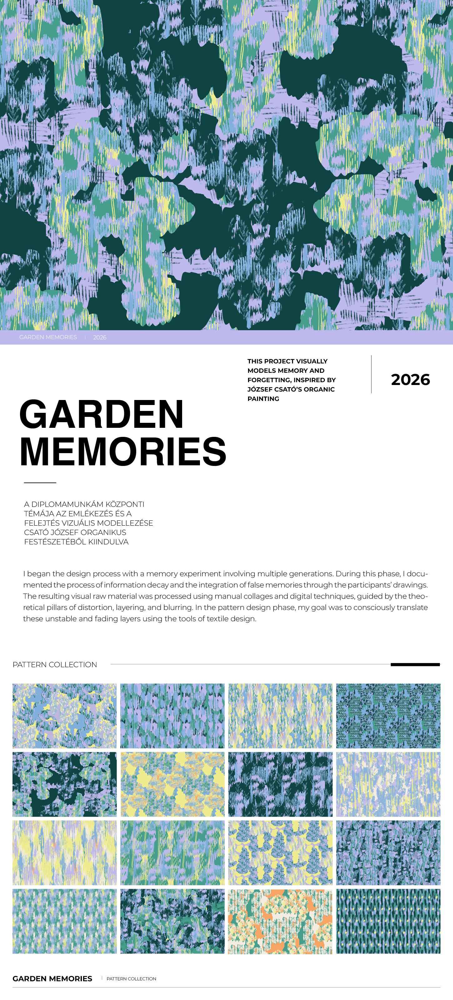

GARDEN MEMORIES|2026
ONE-LINE PROJECT STATEMENT GOES HERE
2026GARDEN
MEMORIES
Short intro line goes here.
Project description goes here.
PATTERN COLLECTION
GARDEN MEMORIES| PATTERN COLLECTION

ONE-LINE PROJECT STATEMENT GOES HERE
2026Short intro line goes here.
Project description goes here.
 VEIL OF FOG
VEIL OF FOG STREET SOUNDS
STREET SOUNDS SURFACE ECHOES
SURFACE ECHOES